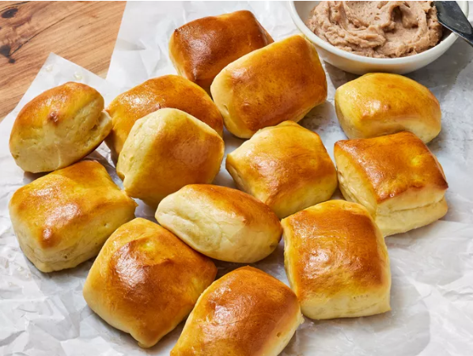

Texas Roadhouse Rolls

Description
Now you don’t have to take a trip to Texas Roadhouse to get your hands on those soft, sweet, and irresistibly fluffy rolls. Our copycat version delivers the same warm and comforting delight of those signature dinner rolls—right from your very own oven.
“These went fast in the test kitchen, proving there is nothing better than bread straight out of the oven,” said recipe tester Elizabeth Mervosh. “These rolls were very easy to make and didn’t require shaping, which I loved. They’re like soft little pillows of goodness!”
Not only do these rolls taste just like the real thing, they even have the iconic Roadhouse roll look, with a square, domed shape and a glossy, golden brown exterior. But, no basket of fresh-baked rolls is complete without our Copycat Cinnamon Honey Butter, which adds a sweet richness to every warm, tender bite.
Ingredients
- 1 cup whole milk
- 1/4 cup granulated sugar
- 6 tablespoons unsalted butter, softened, divided
- 1 (1/4-oz.) envelope active dry yeast>
- 1 1/2 teaspoon kosher salt
- 1 large egg yolk, at room temperature
- 2 large eggs, at room temperature, divided
- 3 3/4 cups all-purpose flour, divided, plus more for work surface
- cooking spray
- 1 tablespoon water
- cinnamon Honey Butter, for serving
Steps
- Gather all ingredients.
- Heat milk in a small saucepan over medium heat, stirring occasionally, until just bubbling around the edges, about 5 minutes. Remove
from heat and pour into the bowl of a stand mixer fitted with a dough hook attachment. Stir in sugar and 4 tablespoons butter; let
cool, stirring occasionally, until mixture is between 110 degrees F and 120 degrees F (43 degrees C and 48 degrees C) about 10 minutes.
Stir in yeast; let stand until mixture is foamy, about 10 minutes.
- Add salt, egg yolk, 1 egg, and 1/2 of the flour; beat on low speed until combined, about 1 minute. Still on low speed, carefully add
remaining flour, 1/2 cup at a time, and beat until dough just comes together, about 1 minute. Dough will be very sticky and wet.
Increase speed to medium, and beat until dough pulls away from sides of bowl and dough is smooth and elastic, 8 to 10 minutes
- Coat a large bowl with cooking spray; transfer dough to prepared bowl. Cover loosely and let rise in a warm place until about doubled
in size, about 1 hour.
- With a clean hand, punch down dough and turn dough out onto a lightly floured work surface. Press or roll dough out into a rectangle
about 1/2 inch thick. Trim edges with a sharp knife to create a perfect 16- x 8-inch rectangle. Starting at one long end, fold dough
in half to form a 16- x 4-inch rectangle; pinch to close dough halves together.
- Use a sharp knife or pizza cutter, cut dough into 16 (2-inch) squares. Place dough squares onto a parchment paper-lined baking sheet
about 1/2-inch apart. Cover loosely with plastic wrap; set aside at room temperature until about doubled in size, 1 hour. (It’s okay
if the baking sheet looks a little crowded.) Preheat the oven to 350 degrees F (175 degrees C).
- Whisk together remaining egg and water until combined. Brush tops of rolls with egg wash. Bake in preheated oven until golden brown,
12 to 16 minutes.
- Microwave remaining 2 tablespoons butter on HIGH until melted, about 30 seconds. Immediately brush rolls with melted butter.
- Serve warm with Cinnamon Honey Butter.
Nutrition Facts
Per serving: 186 Calories; 7g Fat; 26g Carbs; 5g Protein